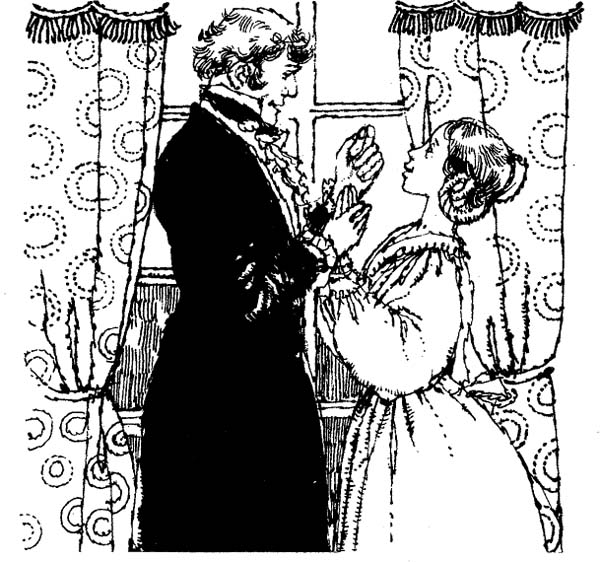

Listen to Part 1:
‘Ta phải nói gì đây?’ Tôi lặp lại. ‘Sự độc ác của ta đã gieo rắc nỗi kinh hoàng và đau khổ cho thế giới. Ta đã tạo ra ngươi. Giờ đây, ta phải tìm sức mạnh để giết ngươi.’
Quái vật mỉm cười. Thật là một nụ cười vô cùng ghê sợ.
‘Ngươi không có sức mạnh để giết ta,’ hắn nói. ‘Và ta không muốn giết ngươi. Không. Ngươi phải sống. Ngươi phải làm một điều gì đó cho ta.’
‘Cho ngươi á? Không đời nào!’ Tôi kêu lên.
‘Ngươi phải làm thế,’ Quái vật nói. ‘Nghe này. Sẽ không có gã đàn ông hay cô gái nào muốn là bạn của ta. Ngươi phải tạo ra một người bạn cho ta. Ngươi phải tạo ra một người phụ nữ yêu thương ta. Cô ta phải xấu xí và kinh tởm giống như ta.’
‘Ta sẽ không bao giờ tạo ra một Quái vật nào nữa,’ tôi nói. ‘Ngươi đã gieo rắc đủ đau khổ cho thế gian này rồi.’
‘Ta gieo rắc đau khổ vì ta đau khổ,’ Quái vật trả lời. ‘Giờ chỉ có ngươi mới cứu được ta. Chỉ có ngươi mới có thể khiến cuộc đời ta hạnh phúc.’
Tôi suy nghĩ một lúc.
‘Nếu ta làm thế, thì ngươi phải đi thật xa,’ tôi nói. ‘Ngươi và người phụ nữ đó phải sống xa cách khỏi thành phố và con người. Hai ngươi phải sống ở một nơi hẻo lánh không có bất kỳ ai.’
Quái vật im lặng trong vài phút. Sau đó, hắn mới lên tiếng.
Listen to Part 2:
‘Ta đồng ý,’ Quái vật nói. ‘Đáp ứng yêu cầu của ta. Khi đó, ngươi sẽ không bao giờ nhìn thấy ta nữa. Bắt đầu làm việc ngay đi. Ta sẽ quay lại khi người phụ nữ đó đã sẵn sàng. Tạm biệt cho đến lúc đó.’
Và rồi, không nói thêm lời nào, Quái vật rời tôi một mình trên đỉnh núi.
Tôi có thể làm gì? Tôi không muốn tạo ra thêm một Quái vật nào nữa. Tôi lại nghĩ đến máu và sự ghê rợn. Tôi có thể làm việc với những xác chết thêm một lần nữa hay không? Tôi có thể sống chung với mùi tử khí và máu tanh thêm lần nữa không?
Tôi biết Quái vật sẽ quay lại. Tôi phải làm theo lời hắn ta yêu cầu. Nếu không, hắn sẽ giết tôi. Tôi không quan tâm đến điều đó. Nhưng có lẽ hắn sẽ tiêu diệt cả gia đình tôi. Có lẽ hắn sẽ giết cả Elizabeth thân yêu của tôi.
Tôi không biết phải làm gì. Tôi quyết định sẽ quay về Geneva. Trước hết, tôi phải gặp lại gia đình mình.
Tôi đã rời Geneva gần hai tháng rồi. Cha tôi rất vui khi nhìn thấy tôi.
‘Con vẫn trông ốm yếu, Victor,’ cha nói. ‘Kỳ nghỉ chẳng làm con khỏe ra chút nào. Con cần có người bầu bạn. Không nên cứ ở một mình mãi thế.’
‘Vâng, thưa cha. Tất cả chúng ta đều cần có người để yêu,’ tôi buồn bã nói. Tôi đang nghĩ đến Quái vật. Giống như bao người khác, hắn ta cũng muốn có người để yêu.
‘Cha có một câu hỏi quan trọng muốn hỏi con, Victor,’ cha tôi tiếp tục.
‘Câu hỏi gì thế, thưa cha?’ tôi hỏi.
Listen to Part 3:
‘Con có yêu Elizabeth không?’ cha tôi hỏi.
‘Tất nhiên là có rồi,’ tôi trả lời. ‘Tôi đã yêu cô ấy ngay từ lần đầu tiên gặp mặt.’
‘Nhưng con yêu cô ấy như một người em gái – hay như một người vợ?’
Tôi nghĩ về cuộc đời bất hạnh của mình. Tôi nghĩ về vẻ đẹp của Elizabeth. Tôi không phải sống cô đơn. Tôi có thể hạnh phúc. Nhưng rồi tôi lại nhớ đến Quái vật. Tôi sợ hắn. Tôi phải làm theo yêu cầu của hắn.
Tôi đợi một lúc lâu mới lên tiếng. Sau đó, tôi nhìn cha.
‘Con yêu Elizabeth và muốn cưới cô ấy làm vợ,’ tôi chậm rãi nói với cha . ‘Nhưng chưa phải bây giờ. Con còn phải làm việc. Con phải rời Geneva và làm việc một mình.’
‘Con đang làm công việc gì vậy?’ cha tôi hỏi. ‘Con làm việc quá sức rồi, Victor. Con sẽ lại ốm mất thôi. Sao con không ở lại đây với bạn bè mình đi?’
Đúng vậy, tôi rất muốn ở lại Geneva! Nhưng tôi biết Quái vật đang theo dõi tôi.
‘Không được, thưa cha, con phải đi,’ tôi nói.
Trước khi rời đi, tôi đã nói chuyện riêng với Elizabeth thân yêu của tôi.
Listen to Part 4:
‘Em hãy chờ anh, Elizabeth,’ tôi nói. ‘Anh sẽ quay lại khi công việc của anh hoàn thành. Hãy chờ anh, tình yêu của anh. Khi anh trở về, chúng ta sẽ tổ chức đám cưới.’
‘Em sẽ chờ anh mãi, Victor,’ Elizabeth trả lời.

‘Chúa phù hộ em,’ tôi nói. ‘Hãy cho anh thêm vài tháng nữa. Chỉ cần thế là đủ.’
Tôi chuẩn bị cho hành trình dài sắp tới. Tôi phải tìm một nơi để sinh sống. Tôi phải tìm một nơi thật xa Geneva. Tôi phải tìm một nơi có thể tạo ra Quái vật phiên bản nữ. Nhưng tôi có thể đến đâu bây giờ? Nơi nào có thể giúp tôi bí mật thực hiện công việc độc ác này?
Câu trả lời cho những câu hỏi này đã đến trong một lá thư. Đó là lá thư của Henry Clerval ở Strasbourg.
Victor thân mến, (Henry viết)
Tôi đã tìm được việc ở đây. Tôi đang dạy tiếng ở trường Đại học. Tại sao bạn không đến thăm tôi nhỉ? Strasbourg là một thành phố xinh đẹp lắm. Đã lâu rồi chúng ta không gặp nhau. Chúng ta có nhiều chuyện để nói lắm. Nghỉ phép sẽ tốt cho bạn. Hãy cho tôi biết khi nào bạn đến nhé.
Bạn của bạn, Henry.
Tôi đã viết thư trả lời Henry. Tôi đồng ý đến thăm anh ta.
Listen to Part 5:
Tôi biết mình phải làm gì. Sau một hoặc hai tuần, tôi sẽ tìm một căn nhà cô đơn. Tôi sẽ xây một phòng thí nghiệm ở đó. Tôi sẽ làm việc như trước đây, nhưng nhanh hơn. Rồi tôi sẽ thoát khỏi Quái vật mãi mãi.